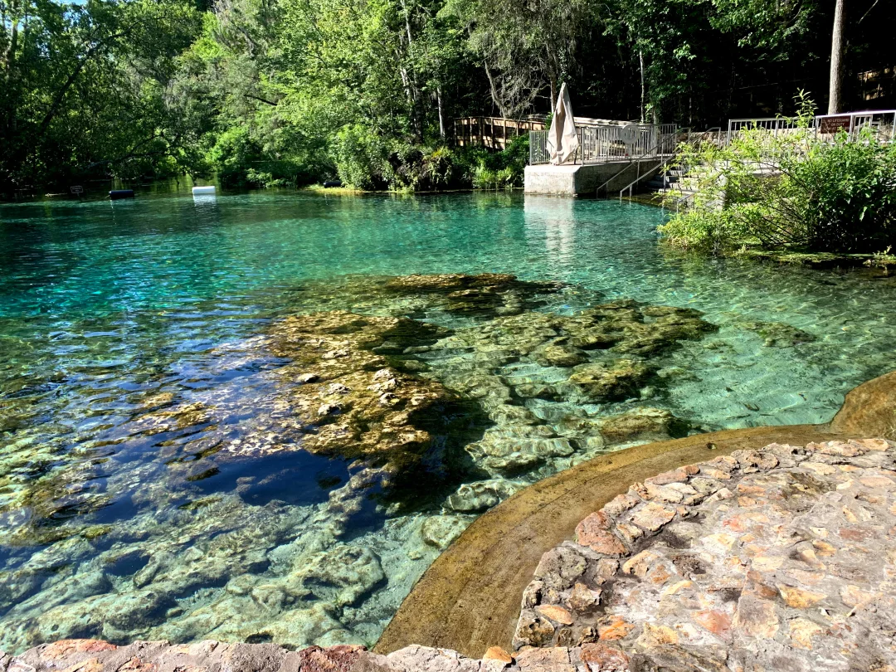

Mineral water is sourced from natural springs, wells, or aquifers that are rich in minerals. These sources are often located in protected areas to ensure purity and are carefully selected for their mineral content.
The water is filtered to remove any impurities while preserving its natural mineral content. It undergoes rigorous quality control testing to ensure it meets safety and health standards.
Once the water passes quality checks, it is bottled in a controlled environment to maintain its purity. The bottling process ensures that the water is sealed and preserved for consumer use, retaining its natural minerals and freshness.